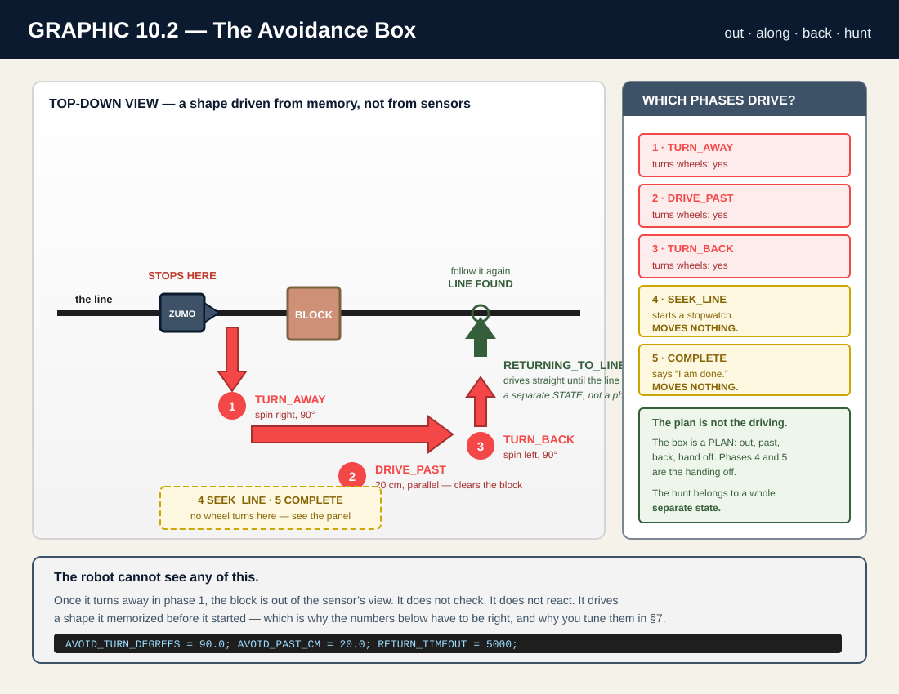
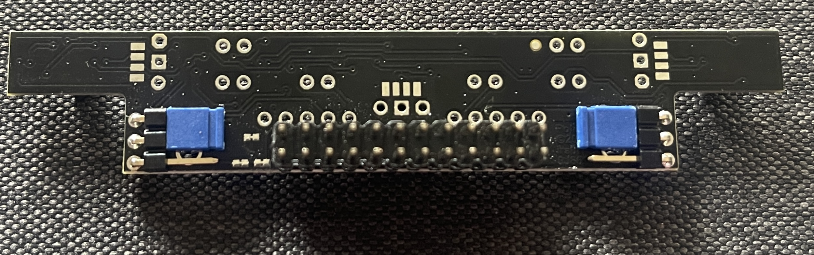
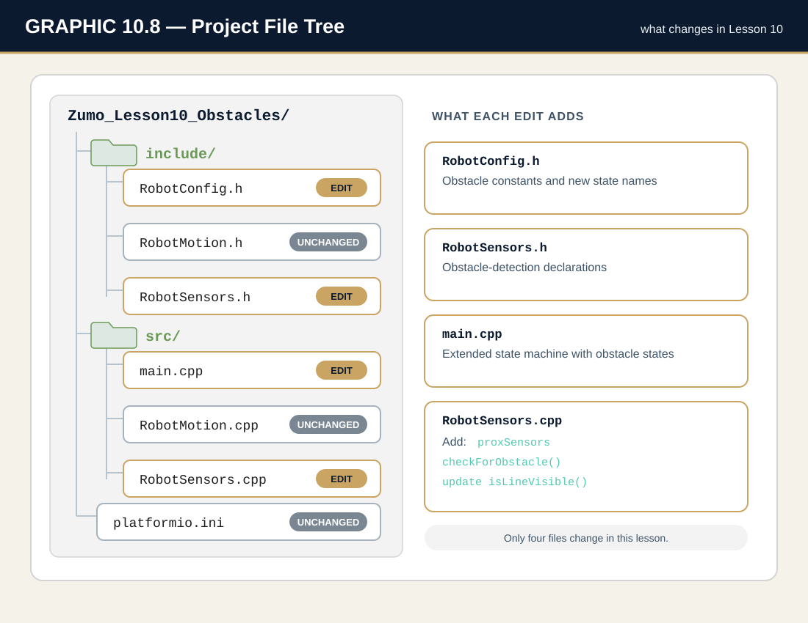
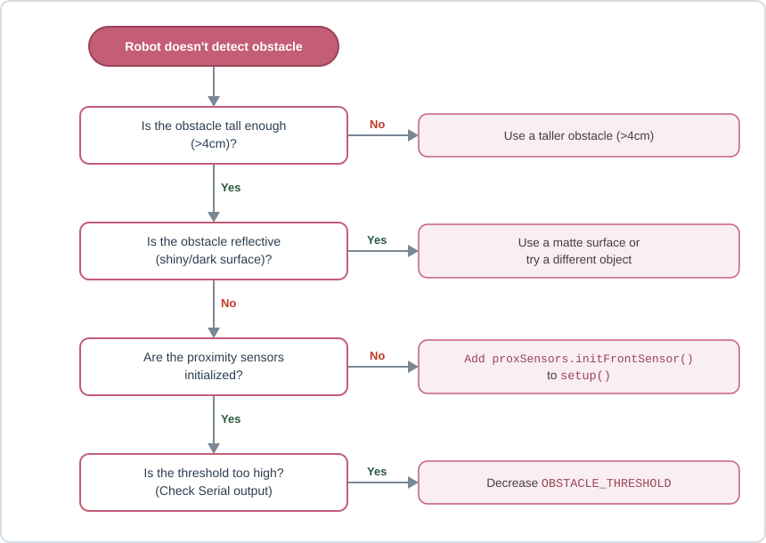
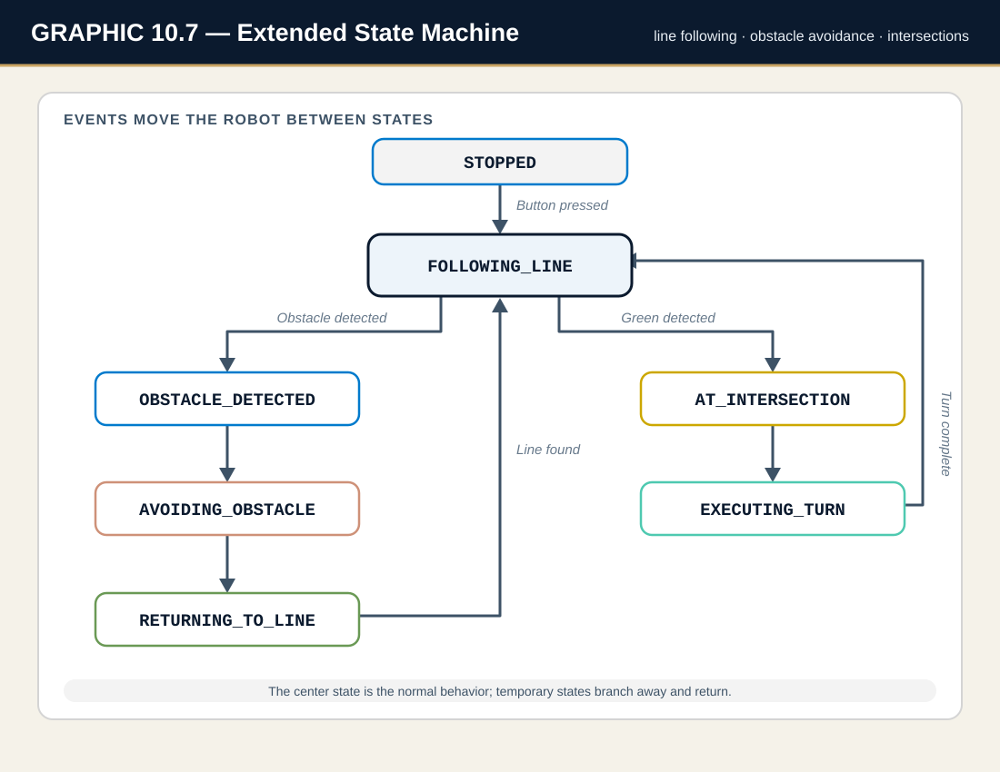

Your robot from Lesson 9 is genuinely good. It follows a line with a P‑controller.
It reads green markers and decides which way to turn. It has a state machine that knows what it is doing
and a kill switch that can stop it. It can run a whole course.
It can run a whole course that nobody interfered with.
Here is the problem. Every course your robot has ever seen was drawn. The line was drawn,
the markers were drawn, the dead ends were drawn. The robot's entire world was printed on the mat, and
everything in that world was on the mat before the robot started.
Now somebody sets a block on the line.
👀 WHAT YOU SHOULD SEE
Run your Lesson 9 code into a block on the line. Do not skip this — you need to see the failure
before you fix it.
The robot follows the line beautifully, right up to the block, and then drives into it.
The wheels keep turning. The line is still under the sensors, so as far as the robot knows,
everything is fine. It will push against that block until the batteries die.
The robot is not broken. The robot is blind. Line sensors point down.
They can answer exactly one question — “is there a line beneath me?” — and they answer it correctly.
They cannot answer “is there a wall in front of me?” because they are not pointed at the front,
and nothing in your code has ever asked.
This lesson gives your robot the sense it is missing, and then makes it do something much harder
than sensing: deciding what to do about it.
KEY TERM: Obstacle
Anything physically blocking the robot’s path that is not part of the drawn course. The line is on the mat. The obstacle is on top of the mat — and it can move, appear, or be placed after the run has started.
You already own the sensor. You met it in Lesson 5: the proximity sensor,
which bounces infrared light off things in front of the robot and reports how strongly it came back.
You used it to detect an opponent. Today you use it to detect a wall.
Builds on:
Simple Obstacle Avoidance from Lesson 5 — see, stop, turn away. Today that reflex meets a line that disagrees with it.
But the sensor is the easy half. The hard half is this:
INSIGHT
Your robot is about to want two things at once. The line
says go forward. The obstacle says stop. Both are true. Both are urgent. Your robot has to
decide which one wins — and it has to decide the same way every single time, or it is not a robot,
it is a coin flip.
That is called arbitration, and it is the real subject of this lesson.
The proximity sensor is just what makes the argument possible.
By the end you will have a robot that follows a line, reads intersections, notices a block it has never
seen before, stops, drives around it, finds the line again on the other side, and carries on as if
nothing happened. Four subsystems, one brain, one loop.
☐ Explain why line sensors cannot see an obstacle, and why the proximity sensor can.
☐ Initialize the front proximity sensor with initFrontSensor() — and explain why you cannot have the side sensors as well.
☐ Read the front proximity sensor and convert a raw 0–6 reading into a yes/no answer with a threshold.
☐ Add a new hardware object to the extern pattern — and diagnose the redefinition error you get when you put it in the wrong file.
☐ Extend a state machine with three new states without breaking the four that already work.
☐ Implement behavior arbitration: decide, on purpose, which of two competing sensor inputs wins.
☐ Use a phase variable to run a multi‑step maneuver inside a single state.
☐ Replace timed motion with encoder motion, and measure how much code the fix actually removes.
☐ Calibrate a timed maneuver one primitive at a time instead of guessing at the whole thing.
NOTE
This lesson assumes your Lesson 9 project works.
Not “compiles” — works. It should follow a line, stop at a green marker, and turn.
If Lesson 9 is not solid, fix it before you start. Every bug you bring with you will look like an
obstacle bug today, and you will hunt it in the wrong file.
In Lesson 5 you used the proximity sensors to find an opponent. The idea has not changed:
the robot fires an infrared LED, the light bounces off whatever is in front of it, and a receiver measures
how much came back. Close object → strong reflection → high reading.
What matters is the scale, and it is going to feel small:
WARNING
The proximity reading is 0 to 6. Not 0–1000 like the
calibrated line sensors. Not 0–4000 like readLinePosition(). Zero to six.
Seven possible values, total. Every threshold you write today lives inside that tiny range, and
a “big” change is 1.
You met these three thresholds in Lesson 5, and they carry over unchanged:
Constant
Value
Meaning
DETECTION_THRESHOLD
1
Something is out there. Could be far away.
CLOSE_THRESHOLD
3
Close enough to act. This is the one we trigger on.
VERY_CLOSE_THRESHOLD
5
Too close. If you are seeing this, you waited too long.
NOTE
Why trigger on 3 and not 5? Because the robot needs room to stop.
At 5 you are nearly touching the block. Stopping at 3 gives the robot space to halt, think, and turn
without scraping the obstacle on the way around. Trigger early; the block is not going anywhere.
3.2 The Sensor You Do NOT Own (And Why)
Here is where this lesson gets honest with you.
The Zumo has three proximity receivers: left, front, right. In Lesson 5 you used all three,
and you used them to tell direction — is the opponent to my left or my right?
You cannot do that today. You have one. The front one.
WARNING
Pins 20 and 4 are shared hardware. They are physically wired to
both the left/right proximity receivers and line sensors 2 and 4. One set of pins.
Two jobs. You must choose.
In Lesson 5 you ran the jumpers in the factory 3‑down layout: 3 line sensors
+ 3 proximity receivers. In Lesson 5’s exit you moved them to 5‑down, permanently:
5 line sensors + 1 proximity receiver (front only). You did that on purpose. Five line sensors
are what make P‑control possible, and P‑control is what Lessons 8, 9, and 10 are built on.
So the trade you made back in Lesson 5 comes due today. You spent your side proximity
receivers to buy line‑following precision, and it was the right call — but it means the following code
is not a bug, and you should not spend an evening trying to fix it:
// Under the five-down jumper layout, THESE RETURN 0. Always. Forever.
proxSensors.countsLeftWithLeftLeds(); // 0 - the receiver is not connected
proxSensors.countsRightWithRightLeds(); // 0 - the receiver is not connected// THIS is the one you have:
proxSensors.countsFrontWithLeftLeds(); // works
proxSensors.countsFrontWithRightLeds(); // works
NOTE
the dead spot, now permanent.
Lesson 5 §3.4a showed you the two blind wedges — roughly 19° to 72° off each side of the nose — where no proximity detector is aimed. Back then the side receivers at least covered the flanks beyond them. Under five-down they do not. Everything outside FRONT’s ±19° is now invisible, permanently — which is the deeper reason directional avoidance is off the table today. Not just “which side is it on?” but “is it even in the cone?” A block sitting 40° off your nose reads a clean 0 from a sensor that is working perfectly.
INSIGHT
Read that carefully, because it changes the whole design. With one
forward‑facing sensor, your robot can answer “is something in front of me?”
It cannot answer “which side is it on?” — and therefore it cannot
decide to go around the left side because the block is on the right. Directional avoidance is
physically impossible on this robot, in this configuration. Not hard. Not advanced.
Impossible.
This is the single most important paragraph in the lesson, so here it is again in plain terms:
your sensor tells you THAT, not WHERE. Every design decision below falls out of that one fact.
So what can you do? You pick a direction and commit. Our robot always turns the same way first,
and if you want to get clever, you alternate — turn away one direction this time, the other
direction next time — which is a strategy that needs no sensor at all, just a counter. That is
Challenge C2.
3.3 The Avoidance Maneuver
When the robot stops in front of a block, it has to get around it. It cannot see around it.
It cannot see the block at all once it turns away. So it does the only thing a blind robot can do:
it drives a shape it has memorized.
KEY TERM: Avoidance Maneuver
A pre‑planned sequence of movements that takes the robot off the line, around the obstacle, and back to the line. The robot is not reacting during the maneuver — it is executing a plan it committed to before it started.
Our maneuver is a box: out, along, back, hunt.
Phase
Action
Purpose
PHASE_TURN_AWAY
Turn 90°
Point straight away from the line.
PHASE_DRIVE_OUT
Drive 15 cm
Step sideways off the line, clear of the block.
PHASE_TURN_ALONG
Turn −90°
Back to the original heading — now running parallel to the line.
PHASE_DRIVE_PAST
Drive 20 cm
Travel parallel to the line, clearing the obstacle.
PHASE_TURN_BACK
Turn −90°
Face the line square-on, ready to cross it.
PHASE_SEEK_LINE
Start the clock
Note the time, then hand off to the hunt.
PHASE_COMPLETE
Hand back control
The plan is finished. The state machine takes over.

INSIGHT
Two of those seven phases do not drive the robot. Look again at
PHASE_SEEK_LINE and PHASE_COMPLETE — one starts a stopwatch, the other just says
“I’m done.” Neither turns a wheel. That looks like a mistake. It is not, and it is worth
understanding why, because it is a real piece of software design.
The seven phases are the plan, not the driving. The plan is: get out, get past, get back,
then start hunting, then give the wheel back. Actually hunting for the line is a big job — it needs its
own timeout, its own line check, its own way to give up — and it does not belong buried inside a maneuver.
So it gets its own state: RETURNING_TO_LINE.
PHASE_SEEK_LINE’s job is to start the stopwatch at the exact
moment the hunt begins. PHASE_COMPLETE’s job is the handoff — it is the
maneuver saying “my plan is finished, the state machine can drive now.” Small jobs. Real jobs.
A phase does not have to move the robot to matter.
3.4 Arbitration: When Two Sensors Disagree
This is the hard part, and it has nothing to do with proximity sensors.
Your robot is following a line. In a single pass of loop(), all of these can be true at once:
The line sensors say: the line curves left, correct now.
The green markers say: there is an intersection here, stop and turn right.
The proximity sensor says: there is a block 3 cm in front of you.
All three are correct. All three want the motors. Only one can have them.
KEY TERM: Behavior Arbitration
Deciding, in advance and in writing, which behavior wins when two or more want control of the robot at the same time. Not “whichever if runs first by accident” — a deliberate, ordered priority.
The word “in advance” is doing a lot of work there. If you do not decide the priority
on purpose, you still get a priority — it is just whichever if statement you happened to
type first. That is not a decision. That is an accident that compiles.
So decide. Ours:
Priority
Behavior
Why it sits here
1 (highest)
Obstacle
A crash is worse than a missed turn. You can re-run a course you got lost on. You cannot un-break a robot.
2
Intersection
The course is asking a question. Answer it — but not while something is in the way.
3 (lowest)
Follow the line
The default. What the robot does when nothing more urgent is happening.
LEARN
In code, priority is just the order of your if
statements, and a break to stop the lower ones from running. That is the whole
implementation. The thinking is hard; the typing is easy. Do the thinking first.
3.5 Why delay() Makes Your Robot Blind
Your first instinct for “drive forward past the block” will be this:
motors.setSpeeds(DRIVE_SPEED, DRIVE_SPEED);
delay(800); // drive for 800ms
motors.setSpeeds(0, 0);
It works. Sort of. And it will cost you a competition.
Here is what delay(800) actually does: it stops your program dead for eight tenths of a second.
Not “runs slower.” Stops. During those 800 milliseconds your robot does not read the
line. Does not read the proximity sensor. Does not check the kill switch. You can press B all you like —
nothing is listening.
WARNING
Eight hundred milliseconds is roughly 40 passes of loop()
that never happened. Forty chances to notice something — a second obstacle, the line reappearing,
your hand on the kill switch — thrown away. A robot inside a delay() is not a robot.
It is a wind‑up toy.
And there is a second problem, quieter and worse. 800 ms is not a distance.
It is a duration. How far the robot actually travels in 800 ms depends on battery charge, wheel grip,
floor surface, and motor wear. Fresh batteries: it overshoots. Tired batteries: it comes up short. The
number that worked in class on Tuesday is wrong on Friday, and nothing in your code knows.
You already own the fix. You built it in Lesson 6 and filed it in Lesson 7:
driveDistance(20.0); // 20 CENTIMETERS. Not "however far 800ms gets us."
turnDegrees(90.0); // 90 DEGREES. Measured by encoders, not by a stopwatch.
INSIGHT
In Section 6 you will build the timed version first, on purpose,
and watch it fail. Then you will replace it with the encoder version and count the lines. The fix is
smaller than the problem. That is not a coincidence — it is what it feels like when you
finally use the right tool.
3.6 Finding the Line Again
The maneuver ends with the robot somewhere past the block, pointed roughly back at where
the line ought to be. Roughly. The robot has been driving blind for three phases; small errors have
been quietly accumulating the whole time.
So it does not assume. It hunts: creep forward, checking isLineVisible() every pass,
until the line appears under the sensors.
WARNING
And it must be able to give up. If the line never comes back — the robot
overshot, the block was bigger than expected, someone moved the mat — a robot that hunts forever
drives off the table.
That is what RETURN_TIMEOUT is for: five seconds, then stop
and say so. A robot that stops and admits it is lost is infinitely more useful than a robot
that confidently drives into a wall.
And this is an open‑loop straight line — the robot is driving forward with nothing
watching whether it is going straight. You know what that needs by now:
motors.setSpeeds(DRIVE_SPEED + TRIM, DRIVE_SPEED); // Blind AND straight = TRIM
NOTE
Open loop needs TRIM. Closed loop does not.
While hunting, nothing is correcting the robot’s heading — so an untrimmed robot curves, and a
curving robot can cross beside the line instead of over it and hunt right past it into the timeout.
Compare that with followLine(), which gets no TRIM, because the P‑controller is
already correcting the heading fifty times a second. Adding TRIM there would make it fight itself.
Section 4 · The CourseObstacles That Actually Work
4.1 What You Need
Your Zumo 32U4, with a working Lesson 9 project on it.
Your line‑following course — the same mat you used for Lessons 8 and 9.
Obstacles. See 4.3 — what you use matters more than you would think.
Fresh batteries. Proximity readings sag on a tired pack.
4.2 The Jumpers — Confirm Before You Start
Your jumpers should already be in the five‑down layout. You moved them there
permanently at the end of Lesson 5, and Lessons 6 through 9 depend on it. Today you use the one proximity
receiver that layout leaves you.
DO THIS NOW
Flip the robot over and confirm: DN2 and DN4 are down.
Five line sensors connected, front proximity receiver connected, side receivers disconnected.
If a previous class period moved them back to factory, move them again — and re‑run the
JUMPER CHECK program from Lesson 5 §7.3 to prove all five line sensors respond.
WARNING
If the jumpers are wrong, initFiveSensors() fails
silently. No error, no warning — your robot just follows the line badly and you spend an
hour tuning KP to fix a hardware problem. Check the jumpers first. Always.

[IMAGE 10.1] The five-down layout — DN2 and DN4 bridged. This is the same photo you met in Lesson 5, and it is the configuration every lesson since has depended on.
4.3 Obstacles That Actually Work
The proximity sensor sees infrared light bouncing back. That means what your obstacle is
made of matters as much as where you put it. A block the robot cannot see is not a test — it is a
frustration generator.
Property
Good
Bad — and why
Color
Light. White, tan, light gray.
Matte black. Absorbs IR. Reads near‑zero even when touching the robot.
Surface
Flat, facing the robot.
Round or angled. Bounces IR away instead of back.
Height
Taller than the sensor — 5 cm or more.
Short. The IR beam passes straight over the top of it.
Width
Wider than the robot.
Narrow. The robot avoids it and clips it with a wheel.
Weight
Heavy enough to stay put.
Light. The robot nudges it and now the course has moved.
TIP
A cardboard box, a thick book stood on end, or a foam block all work well.
A soda can is the classic trap: round, shiny, narrow, and light — it fails the surface, width and weight rows all at once, and its curved skin throws the IR sideways even when the robot is right on top of it.
4.4 Course Setup
Set up your Lesson 9 course exactly as before.
Pick a straight section of line, well away from any green marker.
Put the obstacle squarely on the line, centered.
Leave at least 30 cm of clear floor to the side the robot will detour into.
WARNING
Do not put your first obstacle near an intersection. You would be
testing arbitration and avoidance and turning, all at once, and when it fails you will not know which
one broke. Test on a boring straight line first. Make it work. Then get mean.
Section 5 · Code WalkthroughFour States Become Seven
5.1 Project Organization
Nothing structural changes today. You inherit Lesson 9’s eight‑file project and add to it.
That is the whole point of the architecture you built in Lesson 7 — new capability should mean
new lines, not new chaos.

[GRAPHIC 10.8] The eight files — and where this lesson’s new code lands (File: L10_GRAPHIC_10-08_project_file_tree.svg)
Two files unchanged. RobotMotion.cpp already knows how to
driveDistance() and turnDegrees() — you wrote it in Lesson 6, filed it in Lesson 7,
and today you just call it. That is what a good file boundary buys you: obstacle avoidance is not
a motion problem, so it does not touch the motion file.
5.2 What Is New
New constants (RobotConfig.h)
Constant
Value
What it decides
DETECTION_THRESHOLD
1
“Something is out there.” Used for the live readout, not for triggering.
CLOSE_THRESHOLD
3
The trigger. At or above this, the robot stops and avoids.
VERY_CLOSE_THRESHOLD
5
“Too close.” A warning sign that your trigger is too late.
AVOID_TURN_DEGREES
90.0
How far to turn away from the line.
AVOID_OUT_CM
15.0
How far to step sideways off the line before running past. Must carry the whole robot clear of the tape.
AVOID_PAST_CM
20.0
How far to drive alongside the obstacle. Must exceed the obstacle’s width.
RETURN_TIMEOUT
5000
Milliseconds to hunt for the line before giving up and stopping.
The state machine grows — four states become seven
Here is the enum you are extending. The first four you already have. The last three are today.
// ===== ROBOT STATES (UPDATED for Lesson 10) =====// One name for "what is the robot doing right now"enumRobotState {
STOPPED, // Motors off, waiting for B
FOLLOWING_LINE, // P-control driving - Lesson 8's whole job
AT_INTERSECTION, // Stopped on a marker, announcing the decision
EXECUTING_TURN, // Turning on Lesson 6's encoder machinery
OBSTACLE_DETECTED, // NEW: something is in the way - stop and plan
AVOIDING_OBSTACLE, // NEW: driving the avoidance maneuver
RETURNING_TO_LINE // NEW: maneuver done, hunting for the line again
};
INSIGHT
Look at what did not happen. You did not rewrite the state machine.
You did not touch FOLLOWING_LINE or EXECUTING_TURN. You appended three names
to a list. A state machine that can grow like this is the payoff for having built it properly in Lesson 9 —
and it is exactly why Lesson 9 made you convert that bool isRunning into an enum in the first place.
And a second, smaller enum: the phases
// ===== AVOIDANCE PHASES (NEW for Lesson 10) =====// ONE state (AVOIDING_OBSTACLE) takes SEVEN steps. Each does ONE job.enumAvoidPhase {
PHASE_TURN_AWAY, // 1. Turn 90 degrees away from the line
PHASE_DRIVE_OUT, // 2. Step out sideways, clear of the line
PHASE_TURN_ALONG, // 3. Turn back to the original heading - now parallel
PHASE_DRIVE_PAST, // 4. Drive forward, past the obstacle
PHASE_TURN_BACK, // 5. Turn to FACE the line
PHASE_SEEK_LINE, // 6. Start the clock on the hunt
PHASE_COMPLETE // 7. Done - hand control back to the state machine
};
Two enums, two different jobs, and it is worth being precise about the difference:
RobotState answers “what is the robot doing?”
AvoidPhase answers “how far through the maneuver am I?” — and it only
means anything while currentState == AVOIDING_OBSTACLE.
One state. Seven steps inside it. That pattern is important enough that it gets its own section —
see Section 8A.
5.3 New Functions
Function
Returns
Job
Lives in
initProxSensors()
void
Wake the front proximity sensor. Called once, in setup().
RobotSensors.cpp
readFrontProx()
int (0–6)
The raw number. How strong is the reflection?
RobotSensors.cpp
checkForObstacle()
bool
The decision. Is it close enough to act on?
RobotSensors.cpp
killSwitchPressed()
bool
B pressed? Stop everything and say so.
main.cpp
LEARN
readFrontProx() gives you a number.
checkForObstacle() gives you a decision. Keeping those two separate is deliberate:
the number is a fact about the world, and the decision is a policy you chose. When you want to change
the policy, you change one threshold in one file — and the fact‑gathering code never moves.
5.4 The Sensor Functions, In Full
These are the three functions you will write in Step 4. Read them now; build them later.
// ===== OBSTACLE DETECTION (NEW for Lesson 10) =====// Wake the FRONT proximity sensor only.// You spent pins 20 and 4 on line sensors in Lesson 5 - the left and// right receivers are gone. initFrontSensor() asks for what you still have.void initProxSensors() {
proxSensors.initFrontSensor();
}
// Two LED banks light the SAME front sensor. Take the stronger echo.int readFrontProx() {
proxSensors.read();
return max(proxSensors.countsFrontWithLeftLeds(),
proxSensors.countsFrontWithRightLeds());
}
// Is something close enough that we must act?bool checkForObstacle() {
return readFrontProx() >= CLOSE_THRESHOLD;
}
NOTE
readFrontProx() takes the larger of two readings —
the one with the left LEDs firing and the one with the right LEDs firing. Same trick you used in Lesson 5.
Two looks at the same object from slightly different angles; take whichever saw it better. An obstacle
that is slightly off‑center still gets seen.
BRAIN CHECK 01 · MENTAL KNOWLEDGE CHECK — Answer From Your Head
That is the reading done. Before you put a single wheel on the floor, answer these five from your head — no scrolling back, no robot, no help. Then click to compare. If your answer and the reveal disagree, the section number tells you where to re-read.
1. What is the range of a single proximity reading, and how does it compare with the line-sensor scale you have been using? (§3.1)
Zero to six. Seven possible values, total — not 0–1000 like the calibrated line sensors and not 0–4000 like readLinePosition(). Every threshold you write today lives inside that tiny range, which is why a “big” change is 1. The three thresholds carry over from Lesson 5 unchanged: DETECTION_THRESHOLD 1, CLOSE_THRESHOLD 3, VERY_CLOSE_THRESHOLD 5. You trigger on 3 rather than 5 because the robot needs room to stop; at 5 you are nearly touching the block.
2. Your robot cannot decide to go around the left side of a block because the block is on the right. Say why — in terms of hardware, not code. (§3.2)
You have one proximity receiver, the front one. Pins 20 and 4 are shared between the left/right receivers and line sensors 2 and 4, and in Lesson 5 you moved permanently to the five-down layout — five line sensors, one proximity receiver — because five line sensors are what make P‑control possible. So countsLeftWithLeftLeds() and countsRightWithRightLeds() return 0 always, and that is not a bug. Your sensor tells you that, not where. Directional avoidance is not hard or advanced on this robot — it is impossible.
3. In one pass of loop() the line sensors, the green markers and the proximity sensor all want the motors. Which wins, and why that order? (§3.4)
Obstacle first, intersection second, follow-the-line last. A crash is worse than a missed turn — you can re-run a course you got lost on, you cannot un-break a robot. The intersection is the course asking a question, and it deserves an answer, but not while something is in the way. Following the line is the default: what the robot does when nothing more urgent is happening. The point is that you decide this in advance and in writing. If you do not, you still get a priority — whichever if you happened to type first. That is not a decision, it is an accident that compiles.
4. Give two separate reasons delay(800) is the wrong way to drive past a block. (§3.5)
First, it stops the program dead — roughly 40 passes of loop() that never happen. For eight tenths of a second the robot does not read the line, does not read the proximity sensor, and does not check the kill switch. A robot inside a delay() is not a robot, it is a wind‑up toy. Second, and quieter: 800 ms is a duration, not a distance. How far the robot travels in it depends on battery charge, grip, surface and motor wear — fresh batteries overshoot, tired ones come up short, and nothing in your code knows. driveDistance(20.0) and turnDegrees(90.0) fix both.
5. What is RETURN_TIMEOUT for, and what happens to a robot that does not have one? (§3.6)
The maneuver ends with the robot hunting — creeping forward and checking isLineVisible() every pass until the line appears. If the line never comes back, because the robot overshot or the block was bigger than expected or someone moved the mat, a robot that hunts forever drives off the table. RETURN_TIMEOUT is five seconds, then stop and say so. A robot that stops and admits it is lost is infinitely more useful than one that confidently drives into a wall.
Section 6 · Build ItThe Obstacle Detector
Nine steps. You will build the plan first, then the sensor, then the safety, then the
brain — and along the way you will build one thing badly on purpose, watch it fail, and fix it.
Do them in order. Compile at every checkpoint. If a step will not build, stop there —
do not push on and stack a second problem on top of the first.
DO THIS NOW
Every step below has a matching preload in the
Project Maker. If you fall behind, or a build goes sideways and you want a clean slate, use the
CATCH-UP box at the end of that step — it gives you the exact project as it
should look at that moment. You will not be graded on your typing speed.
Step 1 — Copy Your Lesson 9 Project
Work in:
the whole project Where to look: nowhere yet — this is a file operation, not a code edit
Do not start from a blank project. Everything you built in Lessons 6 through 9 —
encoder motion, the extern pattern, the P‑controller, the state machine, intersections —
is the foundation this lesson stands on.
Copy your entire working Lesson 9 project folder.
Rename the copy ObstacleAvoidance.
Open it. Build it. It should compile green before you change a single thing.
WARNING
If your copied project does not compile, stop.
You have imported a broken Lesson 9, and every error you hit today will be blamed on obstacle code
that is not the problem. Fix Lesson 9 first.
CHECKPOINT
Green build. Unmodified Lesson 9 code, in a folder with a new name. Nothing works differently yet — that is correct.
include/RobotConfig.h Where to look: the bottom of the file, after the Lesson 9 constants
Before you write one line of logic, you name the things the logic will talk about.
Thresholds, distances, states, phases — all of it, in the file where robot‑specific numbers live.
Add these three blocks to the end of RobotConfig.h:
// ===== OBSTACLE DETECTION (NEW for Lesson 10) =====// The proximity scale is 0-6, NOT 0-1000. Same names as Lesson 5.constint DETECTION_THRESHOLD = 1; // Anything at all is out thereconstint CLOSE_THRESHOLD = 3; // Close enough to stop and avoidconstint VERY_CLOSE_THRESHOLD = 5; // Too close - you waited too long// ===== AVOIDANCE MANEUVER (NEW for Lesson 10) =====constfloat AVOID_TURN_DEGREES = 90.0; // Quarter turn, away from the lineconstfloat AVOID_OUT_CM = 15.0; // Step out sideways - clear of the lineconstfloat AVOID_PAST_CM = 20.0; // Far enough to clear the obstacleconstunsignedlong RETURN_TIMEOUT = 5000; // Give up hunting after 5 seconds// ===== AVOIDANCE PHASES (NEW for Lesson 10) =====// ONE state (AVOIDING_OBSTACLE) takes SEVEN steps. Each does ONE job.enumAvoidPhase {
PHASE_TURN_AWAY, // 1. Turn 90 degrees away from the line
PHASE_DRIVE_OUT, // 2. Step out sideways, clear of the line
PHASE_TURN_ALONG, // 3. Turn back to the original heading - now parallel
PHASE_DRIVE_PAST, // 4. Drive forward, past the obstacle
PHASE_TURN_BACK, // 5. Turn to FACE the line
PHASE_SEEK_LINE, // 6. Start the clock on the hunt
PHASE_COMPLETE // 7. Done - hand control back to the state machine
};
And replace your RobotState enum — three new names on the end:
// ===== ROBOT STATES (UPDATED for Lesson 10) =====// One name for "what is the robot doing right now"enumRobotState {
STOPPED, // Motors off, waiting for B
FOLLOWING_LINE, // P-control driving - Lesson 8's whole job
AT_INTERSECTION, // Stopped on a marker, announcing the decision
EXECUTING_TURN, // Turning on Lesson 6's encoder machinery
OBSTACLE_DETECTED, // NEW: something is in the way - stop and plan
AVOIDING_OBSTACLE, // NEW: driving the avoidance maneuver
RETURNING_TO_LINE // NEW: maneuver done, hunting for the line again
};
NOTE
Notice you are appending, not rewriting. The four Lesson 9 states
keep their names and their meanings. Nothing that worked yesterday stops working because you added
to the end of a list.
CHECKPOINT
Build (✓). Green. The binary is the same size as Step 1 — you added names, not instructions. Constants that nothing uses yet cost nothing.
include/RobotSensors.h Where to look: the extern block, and the bottom of the file
The header is where a file makes promises. Two promises today.
First, promise the hardware object exists. Add one line to the extern block:
extern Zumo32U4ProximitySensors proxSensors; // NEW for Lesson 10
Second, promise the three functions exist. Add to the bottom:
// ===== OBSTACLE DETECTION (NEW for Lesson 10) =====void initProxSensors();
int readFrontProx();
bool checkForObstacle();
KEY TERM: extern
A promise that a variable or object exists somewhere else. It says “trust me, this thing is real — let me use it.” The header declares it; exactly one .cpp file defines it. Declare in many places, define in one.
CHECKPOINT
Build (✓). Green — and this green means less than you think. You have promised three functions that do not exist yet. The compiler is fine with that, because nothing calls them. Step 4 is where the promise comes due.
src/RobotSensors.cpp Where to look: the object definitions at the top, and the bottom of the file
Now you deliver on the promises. And you are going to get it wrong first — on purpose,
because this particular error is one you will hit again every time you add hardware to a project, and it is
much better to meet it here than at a competition.
DO THIS NOW
Type it wrong first. Go back to
RobotSensors.h and change the line you just added, deleting the word extern:
Zumo32U4ProximitySensors proxSensors; ← no extern
Then add the three functions to the bottom of RobotSensors.cpp, and the object at the top with the others:
Zumo32U4ProximitySensors proxSensors;
And in the header, the line you just broke on purpose:
Zumo32U4ProximitySensors proxSensors; // NEW for Lesson 10 - WRONG, see Section 8
Build it.
👀 WHAT YOU SHOULD SEE
Red. And a specific red:
error: redefinition of ‘Zumo32U4ProximitySensors proxSensors’
Read what it is telling you. You made the object twice — once in the header,
once in the .cpp. And because every file that includes that header gets its own copy of the
object, the linker ends up holding several robots’ worth of proximity sensors and has no idea which one you
meant.
The word extern is the entire difference between “this exists” and
“make one of these.”
🔓 Stuck? The fix, spelled out
Put extern back on the header line. The header declares:
extern Zumo32U4ProximitySensors proxSensors; // NEW for Lesson 10
The .cppdefines — exactly once, in exactly one file:
Zumo32U4ProximitySensors proxSensors; // NO extern - this file CREATES it
Declare in many places. Define in one. That is the whole rule.
INSIGHT
You met this exact pattern in Lesson 7 when you built the extern block,
and in Lesson 8 when a missing extern gave you a different flavor of the same complaint.
This is the third time. It will not be the last. Adding a hardware object to a multi‑file
project is this task — the error is not a hazing ritual, it is the job.
Step 4 (continued) — The Sensor Functions
With extern restored, the top of RobotSensors.cpp reads like this — the new object sits with the hardware it belongs to:
// ===== PROXIMITY HARDWARE (NEW for Lesson 10) =====Zumo32U4ProximitySensors proxSensors; // NO extern - this file CREATES itstaticunsignedint sensorValues[5]; // Array to store the five readingsstaticint lastPosition = LINE_CENTER; // Last known line position
NOTE
Note what is not here: no extern. This file is the one
place in the whole project that actually creates these objects. Everywhere else just borrows them.
Now add the three functions to the bottom of the file:
// ===== OBSTACLE DETECTION (NEW for Lesson 10) =====// Wake the FRONT proximity sensor only.// You spent pins 20 and 4 on line sensors in Lesson 5 - the left and// right receivers are gone. initFrontSensor() asks for what you still have.void initProxSensors() {
proxSensors.initFrontSensor();
}
// Two LED banks light the SAME front sensor. Take the stronger echo.int readFrontProx() {
proxSensors.read();
return max(proxSensors.countsFrontWithLeftLeds(),
proxSensors.countsFrontWithRightLeds());
}
// Is something close enough that we must act?bool checkForObstacle() {
return readFrontProx() >= CLOSE_THRESHOLD;
}
CHECKPOINT
Build (✓). Green. +50 bytes over Step 3 — small, but not zero. That is real code now, not just names.
Typed it wrong and cannot get back? The broken build, exactly as described: Open the Red Build in Project Maker — fix the extern and watch it go green.
Step 5 — Prove the Sensor Is Alive
Work in:
src/main.cpp Where to look:setup(), and showStatus()
You have a sensor. You have no evidence it works. Before you build a single line of avoidance
logic on top of it, put the number on the screen and look at it.
Two edits. First, wake the sensor up — add this to setup(), right after
initLineSensors():
// ===== PROXIMITY SETUP (NEW for Lesson 10) =====
initProxSensors();
Second, add a live readout to the bottom of showStatus():
display.gotoXY(0, 6);
display.print(F("Prox: "));
display.print(readFrontProx()); // NEW for Lesson 10 - is the sensor alive?
display.print(F(" "));
DO THIS NOW
Upload. Leave the robot stopped. Now put your hand slowly in front of it and watch
the bottom line of the display.
Hand far away → 0. Hand approaching → 1, 2, 3…
Hand almost touching → 5 or 6. Take your hand away → back to 0.
WARNING
If it reads 0 no matter what you do, stop here and go to
Section 8. Do not proceed. Every single thing you build after this point depends on this number being real,
and debugging avoidance logic that is fed a dead sensor is a special kind of misery.
CHECKPOINT
The number on the display moves when you move your hand. You now have evidence, not hope.
You are about to write code that makes the robot drive somewhere you did not draw.
Off the line. Into open floor. Based on a sensor reading you have known about for five minutes.
Build the stop button first.
// ===== THE KILL SWITCH (NEW for Lesson 10) =====// Built BEFORE any new driving code. Every state that moves the robot// calls this FIRST. If it returns true, that state must stop immediately.bool killSwitchPressed() {
if (buttonB.getSingleDebouncedPress()) {
motors.setSpeeds(0, 0);
currentState = STOPPED;
showStatus();
returntrue;
}
returnfalse;
}
Then, at the top of every state that moves the robot, one line:
if (killSwitchPressed()) break; // B = STOP - now one helper, used everywhere
WARNING
This is a permanent policy, not a Lesson 10 rule.
From here to the end of the book: the kill switch gets built before the driving code, every time.
Not after you test it. Not once it “mostly works.” Before. A robot you cannot stop is not a
project — it is a hazard with wheels.
CHECKPOINT
Build (✓). Green, +2 bytes. Press B while the robot runs the Lesson 9 course — it stops dead and the display reads STOPPED.
Step 7 — Arbitration: Teach the Robot What Matters Most
Work in:
src/main.cpp Where to look: the FOLLOWING_LINE case, and a new case below it
Now the real work. Inside FOLLOWING_LINE, the robot is about to be asked
three questions at once. You decide the order — and the order is the answer.
First, two new globals at the top of main.cpp — the maneuver needs somewhere to keep its
bookmark, and the hunt needs somewhere to keep its stopwatch:
// ===== ROBOT STATE =====RobotState currentState = STOPPED; // What the robot is doing right nowIntersectionType pendingTurn = NO_INTERSECTION; // The decision waiting to be executedAvoidPhase avoidPhase = PHASE_TURN_AWAY; // NEW for Lesson 10 - which step of the maneuverunsignedlong returnStartTime = 0; // NEW for Lesson 10 - when did the hunt begin?float currentKp = KP; // Live-tunable copy of KPunsignedlong gapStartTime = 0; // When did the line disappear?
LEARN
These are globals on purpose. A variable declared inside
loop() is destroyed the moment loop() ends — and loop() ends thousands of
times during one avoidance maneuver. avoidPhase has to survive between passes, or the robot
forgets which step it was on and starts the plan over, forever.
Now replace your FOLLOWING_LINE case:
case FOLLOWING_LINE: {
if (killSwitchPressed()) break; // B = STOP - now one helper, used everywhere// PRIORITY 1 - a crash is worse than a missed turn. Check it FIRST.if (checkForObstacle()) {
motors.setSpeeds(0, 0); // Stop FIRST - then think
currentState = OBSTACLE_DETECTED;
break;
}
if (isLineVisible()) {
gapStartTime = 0; // Line is back - reset the gap timer
followLine();
// PRIORITY 2 - the course is asking for a turnIntersectionType seen = checkForIntersection();
if (seen != NO_INTERSECTION) {
motors.setSpeeds(0, 0); // Stop FIRST - then think
pendingTurn = seen;
currentState = AT_INTERSECTION;
}
} else {
// PRIORITY 3 - nothing special: just drive
handleGap();
}
break;
}
Read the comments. Priority 1 is the obstacle, and it is checked before anything
else — before the line, before the markers — because a crash is worse than a missed turn.
And the moment it fires, break stops the rest of the case from running. That break
is not tidiness. It is the arbitration.
Then add the new state that catches the decision:
case OBSTACLE_DETECTED: {
if (killSwitchPressed()) break;
display.setLayout21x8();
display.clear();
display.gotoXY(0, 2);
display.print(F("OBSTACLE!"));
buzzer.playNote(NOTE_A(4), 200, 15);
delay(600); // Long enough for a human to see the call
avoidPhase = PHASE_TURN_AWAY; // Rewind the maneuver to step 1
currentState = AVOIDING_OBSTACLE;
break;
}
NOTE
Notice motors.setSpeeds(0, 0); fires before the state
changes. Stop first, then think. A robot that changes its mind while still rolling forward
has already hit the block by the time it decides what to do about it.
CHECKPOINT
Build (✓). Green, +194 bytes. Run the course into an obstacle: the robot follows the line, stops in front of the block, displays OBSTACLE! and beeps. It does not go around it yet — that is Step 8. But it noticed, and it stopped. That is the hard half.
src/main.cpp Where to look: a new AVOIDING_OBSTACLE case
The robot stops at the block and sits there. Now make it go around.
Build it the way your instincts tell you to — with delay(). This is the version most
people write first, and you are going to write it, run it, and watch exactly how it lets you down.
case AVOIDING_OBSTACLE: {
if (killSwitchPressed()) break;
// ONE state. SEVEN steps. The phase variable remembers which one.switch (avoidPhase) {
case PHASE_TURN_AWAY:
motors.setSpeeds(TURN_SPEED, -TURN_SPEED); // Spin right
delay(400); // ...for 400ms. Is that 90 degrees?
motors.setSpeeds(0, 0);
avoidPhase = PHASE_DRIVE_OUT;
break;
case PHASE_DRIVE_OUT:
motors.setSpeeds(DRIVE_SPEED, DRIVE_SPEED);
delay(600); // ...for 600ms. Is that 15 cm?
motors.setSpeeds(0, 0);
avoidPhase = PHASE_TURN_ALONG;
break;
case PHASE_TURN_ALONG:
motors.setSpeeds(-TURN_SPEED, TURN_SPEED); // Spin left
delay(400); // ...and is THIS one still 90?
motors.setSpeeds(0, 0);
avoidPhase = PHASE_DRIVE_PAST;
break;
case PHASE_DRIVE_PAST:
motors.setSpeeds(DRIVE_SPEED, DRIVE_SPEED);
delay(800); // ...for 800ms. How far is that?
motors.setSpeeds(0, 0);
avoidPhase = PHASE_TURN_BACK;
break;
case PHASE_TURN_BACK:
motors.setSpeeds(-TURN_SPEED, TURN_SPEED); // Spin left
delay(400);
motors.setSpeeds(0, 0);
avoidPhase = PHASE_SEEK_LINE;
break;
case PHASE_SEEK_LINE:
returnStartTime = millis(); // Start the clock on the hunt
avoidPhase = PHASE_COMPLETE;
break;
case PHASE_COMPLETE:
currentState = RETURNING_TO_LINE;
break;
}
break;
}
And the state that hunts for the line afterward:
case RETURNING_TO_LINE: {
if (killSwitchPressed()) break;
motors.setSpeeds(DRIVE_SPEED + TRIM, DRIVE_SPEED); // Blind AND straight = TRIMif (isLineVisible()) {
motors.setSpeeds(0, 0);
gapStartTime = 0;
currentState = FOLLOWING_LINE;
showStatus();
break;
}
// Do not hunt forever. If the line never comes back, stop.if (millis() - returnStartTime > RETURN_TIMEOUT) {
motors.setSpeeds(0, 0);
currentState = STOPPED;
display.setLayout21x8();
display.clear();
display.gotoXY(0, 0);
display.print(F("LOST THE LINE"));
display.gotoXY(0, 2);
display.print(F("Press B to retry"));
}
break;
}
DO THIS NOW
Upload and run it into the block. Then run it again. Then change the batteries
and run it a third time.
Write down where the robot ends up each time.
👀 WHAT YOU SHOULD SEE
It works. Mostly. Sometimes.
And then it does not: the robot turns a bit too far, or drives a bit too long, or
stops a bit short of the line — and on fresh batteries it does all three differently than it
did on tired ones. Nothing in your code changed. The robot changed.
INSIGHT
Count the delay() calls you just wrote. Every one of them is a
window where your robot is deaf and blind — not reading the line, not reading proximity,
not listening to the kill switch you built in Step 6. Press B during the maneuver. Nothing happens.
You built a stop button and then wrote code that ignores it.
📦 Catch Up with Project Maker — Step 8 (the timed version)
Step 8 (continued) — The Fix Is Smaller Than the Problem
You already own the tools. You built them in Lesson 6 and filed them in Lesson 7 and have not
touched them since. Replace the whole timed maneuver with this:
case AVOIDING_OBSTACLE: {
if (killSwitchPressed()) break;
// ONE state. SEVEN steps. The phase variable remembers which one.switch (avoidPhase) {
case PHASE_TURN_AWAY:
turnDegrees(AVOID_TURN_DEGREES); // 90 degrees. Measured, not guessed.
avoidPhase = PHASE_DRIVE_OUT;
break;
case PHASE_DRIVE_OUT:
driveDistance(AVOID_OUT_CM); // Step out 15 cm. Now clear of the line.
avoidPhase = PHASE_TURN_ALONG;
break;
case PHASE_TURN_ALONG:
turnDegrees(-AVOID_TURN_DEGREES); // Original heading again - parallel to the line.
avoidPhase = PHASE_DRIVE_PAST;
break;
case PHASE_DRIVE_PAST:
driveDistance(AVOID_PAST_CM); // 20 cm. Measured, not guessed.
avoidPhase = PHASE_TURN_BACK;
break;
case PHASE_TURN_BACK:
turnDegrees(-AVOID_TURN_DEGREES); // Now FACE the line. Negative = left.
avoidPhase = PHASE_SEEK_LINE;
break;
case PHASE_SEEK_LINE:
returnStartTime = millis(); // Start the clock on the hunt
avoidPhase = PHASE_COMPLETE;
break;
case PHASE_COMPLETE:
currentState = RETURNING_TO_LINE;
break;
}
break;
}
👀 WHAT YOU SHOULD SEE
Count the lines. The timed version took fifteen lines of motor commands and
delay() calls to drive the box — three lines for every one of its five moves. This one takes five.
+5 lines in, −15 lines out. The fix removed three times what it
added — and the code it removed was the code that kept breaking.
And look at what the new version says. Not “run the motors for 800 milliseconds and
hope.” It says driveDistance(20.0) — go twenty centimeters — and the
encoders make sure it happens whether the batteries are fresh, tired, or somewhere in between.
INSIGHT
This is what it feels like to finally use the right abstraction. All that
encoder machinery you built in Lesson 6 — COUNTS_PER_CM, averageCounts(), the whole
thing — sat unused for two lessons. It was not busywork. It was a tool you were putting on the shelf
until you needed it. Today you needed it.
CHECKPOINT
Build (✓). Green, +660 bytes. Run it into the block: the robot stops, turns away, drives past, turns back, finds the line, and carries on. Same result on fresh batteries and tired ones.
📦 Catch Up with Project Maker — Step 8 (the encoder fix)
src/main.cpp Where to look:showStatus() — and then the whole course
Everything is built. The last edit is small: teach showStatus() the three new state
names, so the display can tell you what the robot is thinking.
// NEW for Lesson 10 - name the state. Seven names, one switch.switch (currentState) {
case STOPPED: display.print(F("STOPPED")); break;
case FOLLOWING_LINE: display.print(F("FOLLOWING")); break;
case AT_INTERSECTION: display.print(F("INTERSECT")); break;
case EXECUTING_TURN: display.print(F("TURNING")); break;
case OBSTACLE_DETECTED: display.print(F("OBSTACLE!")); break;
case AVOIDING_OBSTACLE: display.print(F("AVOIDING")); break;
case RETURNING_TO_LINE: display.print(F("SEEKING")); break;
}
And while you are in there, rename the two banners in setup() — you are not running Lesson 9 any more:
A second obstacle after a turn, so the robot has to avoid, recover, and keep navigating.
Then watch the display and call out the state as it changes.
FOLLOWING → OBSTACLE! → AVOIDING → SEEKING
→ FOLLOWING → INTERSECT → TURNING → FOLLOWING.
🏁 Your robot now follows a line, reads intersections, avoids obstacles it has never seen before, and recovers — all from one loop, one state machine, and a priority you chose.
CHECKPOINT
Build (✓). Green, 20,516 bytes. The robot completes the full course
without you touching it — and when it does need stopping, B still works, in every state, at every moment.
📦 Catch Up with Project Maker — Step 9 (the finished project)
Your robot avoids obstacles. Now make it avoid them reliably — which is a different
and much more annoying problem.
Before any tuning tables, one piece of advice. It is the most useful thing in this section:
WARNING
Do not tune the whole maneuver at once.
The maneuver has six moving parts — a turn, a drive out, a second turn, a drive past, a third turn, and a hunt.
Run the whole thing, watch it end up in the wrong place, and you have learned almost nothing. Was the
turn too far? The drive too short? Both, cancelling into a lie? You cannot tell. So you change a number, run it
again, and now it is wrong in a new way. That is not calibrating. That is guessing with extra
steps — and it is where an entire afternoon goes.
INSIGHT
Calibrate ONE primitive at a time. Prove it. Then compose.
A turn you have proven cannot be blamed for a bad drive. A drive you have proven cannot be blamed for a bad turn.
When you finally run the whole maneuver and something is off, there is only one thing left it can be.
7A through 7E walk you up that ladder. Each is a separate, complete program —
short enough to read in one sitting, each isolating exactly one thing. All five are in the Project Maker.
Part
What moves
What you hunt
Why it is alone
7A
ONE 90° turn. Nothing else.
TURN_MS
You cannot blame the drive. There is no drive.
7B
ONE straight run. No turning.
DRIVE_MS, then TRIM
You cannot blame the turn. There is no turn.
7C
ONE corner — drive, then turn. Once.
how the two join
Both halves are proven. Only the joint is new.
7D
THE SQUARE — that corner, four times.
accumulated error
The corner is proven. Only repetition is new.
7E
The same square, on encoders.
Nothing at all.
The payoff.
DO THIS NOW
Every program below ships with its numbers set to zero.
That is on purpose — they are your numbers, and the robot will not move until you supply them.
The comment tells you roughly where to start. Write each number down as you find it and carry it
forward; you will need all of them by 7D.
7A — One Turn. Nothing Else.
This program turns the robot 90 degrees and stops. That is the entire program.
#include "RobotConfig.h"#include "RobotSensors.h"#include "RobotHelpers.h"#include "RobotMotion.h"// ===== 7A: FIND THE TIME FOR 90 DEGREES =====// ONE turn. Nothing else moves. Change TURN_MS, upload, watch, repeat.// You are hunting for the number that makes the robot land on 90 degrees.constint TURN_MS = 0; // <-- YOUR NUMBER. Try 400 and work from there.void setup() {
display.setLayout21x8();
display.clear();
display.gotoXY(0, 0);
display.print(F("90 DEG TEST"));
display.gotoXY(0, 2);
display.print(F("TURN_MS = "));
display.print(TURN_MS);
display.gotoXY(0, 4);
display.print(F("Line it up. Press A."));
waitForStart();
display.clear();
display.gotoXY(0, 0);
display.print(F("Turning..."));
motors.setSpeeds(TURN_SPEED, -TURN_SPEED); // Spin right
delay(TURN_MS);
motors.setSpeeds(0, 0);
display.clear();
display.gotoXY(0, 0);
display.print(F("Is it 90 deg?"));
display.gotoXY(0, 2);
display.print(F("Too far? Lower it."));
display.gotoXY(0, 4);
display.print(F("Not far? Raise it."));
}
void loop() {
// Nothing. One turn, one look, one decision.
}
DO THIS NOW
Method:
Set TURN_MS to 400 — the comment says so. That is a starting guess, not an answer.
Put the robot on the floor. Line its front edge up with something straight: a tile seam, a strip of tape.
Upload. Press A. Watch.
Under‑rotated? Raise the number. Over‑rotated? Lower it.
Repeat until it lands square. Write it down.
You will land somewhere around 350–500. Yours will not match your
neighbor’s — that is not a mistake. That is the entire reason this number is a blank.
CHECKPOINT
Press A four times in a row without moving the robot.
Four 90° turns make a full circle — it should finish facing exactly where it started. If it drifts,
TURN_MS is not done. This is a far sharper test than eyeballing a single turn.
The other half. Drive forward 30 cm. Do not turn. Stop.
#include "RobotConfig.h"#include "RobotSensors.h"#include "RobotHelpers.h"#include "RobotMotion.h"// ===== 7B: FIND THE TIME FOR 30 CM =====// ONE straight run. No turning. Change DRIVE_MS, upload, measure, repeat.constint DRIVE_MS = 0; // <-- YOUR NUMBER. Try 1200 and work from there.void setup() {
display.setLayout21x8();
display.clear();
display.gotoXY(0, 0);
display.print(F("30 CM TEST"));
display.gotoXY(0, 2);
display.print(F("DRIVE_MS = "));
display.print(DRIVE_MS);
display.gotoXY(0, 4);
display.print(F("Mark start. Press A."));
waitForStart();
display.clear();
display.gotoXY(0, 0);
display.print(F("Driving..."));
motors.setSpeeds(DRIVE_SPEED + TRIM, DRIVE_SPEED); // TRIM: your straightness number
delay(DRIVE_MS);
motors.setSpeeds(0, 0);
display.clear();
display.gotoXY(0, 0);
display.print(F("Measure it."));
display.gotoXY(0, 2);
display.print(F("Short? Raise DRIVE_MS"));
display.gotoXY(0, 4);
display.print(F("Long? Lower it."));
}
void loop() {
// Nothing. One run, one ruler, one decision.
}
DO THIS NOW
Method — and the order is not optional:
Hunt DRIVE_MS first, with TRIM still at 0. Measure 30 cm on the
floor and mark it. Start at 1200. Adjust until the robot stops on the mark.
Now look at where it is pointing. Did it travel the right distance but finish off to
one side? That is not a distance problem. That is a curve, and no amount of
DRIVE_MS will straighten it.
Now hunt TRIM (it lives in RobotConfig.h). Curving left?
Raise TRIM. Curving right? Lower it — negative is perfectly legal.
Move 1 or 2 at a time; TRIM is a small number with a big effect.
Distance first. Straightness second. Chase both at once and you
will chase your tail.
NOTE
Why does TRIM belong here and not in 7A? Because this is an
open loop — the robot drives forward and nothing is watching whether it is going
straight. Nothing corrects it. So you correct it once, in advance, with a number. In 7A the wheels fight each
other on purpose to make a turn — there is no straight line to keep straight, so TRIM has no job
there at all.
CHECKPOINT
The robot travels 30 cm, stops on the mark, and still points the direction it started. Write both numbers down.
You have a proven turn and a proven drive. Join them once — drive, then turn
— and check the result before you ever ask for four of them.
#include "RobotConfig.h"#include "RobotSensors.h"#include "RobotHelpers.h"#include "RobotMotion.h"// ===== 7C: ONE CORNER =====// Your two tuned numbers, together, ONE time. Drive 30 cm, turn 90 degrees.// If ONE corner is wrong, FOUR corners will be four times as wrong.// Do not loop until this is right.constint DRIVE_MS = 0; // <-- YOUR number from 7Bconstint TURN_MS = 0; // <-- YOUR number from 7Avoid driveOneCorner() {
motors.setSpeeds(DRIVE_SPEED + TRIM, DRIVE_SPEED); // TRIM: your straightness number
delay(DRIVE_MS);
motors.setSpeeds(0, 0);
delay(300); // Settle. Momentum is real.
motors.setSpeeds(TURN_SPEED, -TURN_SPEED);
delay(TURN_MS);
motors.setSpeeds(0, 0);
}
void setup() {
display.setLayout21x8();
display.clear();
display.gotoXY(0, 0);
display.print(F("ONE CORNER"));
display.gotoXY(0, 2);
display.print(F("Mark start + heading"));
display.gotoXY(0, 4);
display.print(F("Press A."));
waitForStart();
driveOneCorner();
display.clear();
display.gotoXY(0, 0);
display.print(F("30 cm out?"));
display.gotoXY(0, 2);
display.print(F("Turned 90 deg?"));
display.gotoXY(0, 4);
display.print(F("BOTH must be yes."));
}
void loop() {
// Nothing.
}
INSIGHT
Look at delay(300). It appears twice, it moves nothing, it reads
no sensors. It is the most important line in this program. A robot that has been driving forward
does not stop the instant you set the speeds to zero — it coasts. Start the turn while it is still
rolling and you pivot around the wrong point. That pause is where the momentum goes to die.
DO THIS NOW
Tape the start position and the heading. Run it. The robot should
drive 30 cm, stop, pivot cleanly through 90°, and stop. One corner. Square.
WARNING
Do not move on to 7D until this corner is right.
If ONE corner is wrong, FOUR will be four times as wrong — and by then the error is big enough that you will
start “fixing” numbers that were never broken in the first place.
Here is the point of the whole ladder. You have a corner that works. A square is
that corner, four times. Nothing about the corner changes. The only new thing in this
program is repetition.
So do not write the corner four times. Loop it.
#include "RobotConfig.h"#include "RobotSensors.h"#include "RobotHelpers.h"#include "RobotMotion.h"// ===== 7D: THE SQUARE =====// You built ONE corner and proved it. A square is that corner, four times.// This is a LOOP. You do not write the corner four times - you REPEAT it.constint DRIVE_MS = 0; // <-- YOUR number from 7Bconstint TURN_MS = 0; // <-- YOUR number from 7Avoid driveOneCorner() {
motors.setSpeeds(DRIVE_SPEED + TRIM, DRIVE_SPEED); // TRIM: your straightness number
delay(DRIVE_MS);
motors.setSpeeds(0, 0);
delay(300);
motors.setSpeeds(TURN_SPEED, -TURN_SPEED);
delay(TURN_MS);
motors.setSpeeds(0, 0);
delay(300);
}
void setup() {
display.setLayout21x8();
display.clear();
display.gotoXY(0, 0);
display.print(F("THE SQUARE"));
display.gotoXY(0, 2);
display.print(F("Mark the start!"));
display.gotoXY(0, 4);
display.print(F("Press A."));
waitForStart();
for (int corner = 1; corner <= 4; corner++) { // FOUR corners. One loop.
display.clear();
display.gotoXY(0, 0);
display.print(F("Corner "));
display.print(corner);
display.print(F(" of 4"));
driveOneCorner();
}
motors.setSpeeds(0, 0);
display.clear();
display.gotoXY(0, 0);
display.print(F("Back at the start?"));
display.gotoXY(0, 2);
display.print(F("Measure the gap."));
}
void loop() {
// Nothing.
}
LEARN
This is what a for loop is actually for.
Not “counting to ten” — that is the textbook example, and it is boring. A loop exists so you never
have to repeat your own code. driveOneCorner() is written once.
Copy‑paste it four times instead, then find a bug in it, and now you must fix the same bug four times —
and you will miss one. With the loop, the corner has exactly one definition. Fix it once; all four
corners are fixed.
DO THIS NOW
Tape a mark on the floor. Line the robot up on it, run the square, and see
how close it comes back. Measure the gap.
👀 WHAT YOU SHOULD SEE
It probably does not close. The robot finishes somewhere near the start,
pointing somewhere near the original heading. “Near” is doing a lot of work in that sentence.
And notice: every individual corner was fine. You proved that in 7C.
But a small error repeated four times is a large error. Four corners each off by 2° leaves the robot 8°
off heading — and every one of those degrees shoves the next side of the square further out.
Errors do not cancel. They accumulate.
🔓 My square is REALLY bad — not even close
Check delay(300) inside driveOneCorner(). Did you type it? Did you shorten it because it looked like it was doing nothing?
Here is the trap, and it is a nasty one: a corner without the momentum settle looks perfectly fine when you run it once in 7C. You would never catch it. But inside a loop, the robot is already rolling into the next drive before the turn has settled — so every corner now inherits the error of the one before it.
7C hides this bug. 7D exposes it. That is exactly why the ladder has both rungs, and exactly why you cannot skip one.
#include "RobotConfig.h"#include "RobotSensors.h"#include "RobotHelpers.h"#include "RobotMotion.h"// ===== 7E: THE SAME SQUARE - WITH ENCODERS =====// Same shape. Same 30 cm. Same 90 degrees. No stopwatch anywhere.// You did not tune these numbers. You did not have to.void driveOneCorner() {
driveDistance(30.0); // 30 cm - the WHEELS say when
delay(300);
turnDegrees(90.0); // 90 degrees - the WHEELS say when
delay(300);
}
void setup() {
display.setLayout21x8();
display.clear();
display.gotoXY(0, 0);
display.print(F("SQUARE - ENCODERS"));
display.gotoXY(0, 2);
display.print(F("Same start mark."));
display.gotoXY(0, 4);
display.print(F("Press A."));
waitForStart();
for (int corner = 1; corner <= 4; corner++) {
display.clear();
display.gotoXY(0, 0);
display.print(F("Corner "));
display.print(corner);
display.print(F(" of 4"));
driveOneCorner();
}
motors.setSpeeds(0, 0);
display.clear();
display.gotoXY(0, 0);
display.print(F("Compare the gap."));
display.gotoXY(0, 2);
display.print(F("Now you know why."));
}
void loop() {
// Nothing.
}
👀 WHAT YOU SHOULD SEE
Where are the numbers?
There is no TURN_MS. There is no DRIVE_MS. Nothing to hunt,
nothing to bracket, nothing to write down. You say driveDistance(30) and the robot goes 30
centimeters, because the encoders are counting. You say turnDegrees(90)
and it turns 90 degrees.
INSIGHT
You just spent four rungs hunting numbers this program does not need.
That was not wasted time — that was the argument. Timed motion asks “for how
long?” and the honest answer is “depends on the batteries, the floor, and the day.”
Encoder motion asks “how far?” and the answer is just… how far.
This is why Lesson 6 exists. And it is why Step 8 deleted more code than it added.
NOTE
One number is still live in here: TRIM — and it is
not in this sketch. It is inside driveDistance(), where it has always been. The encoders count
rotation; they cannot tell that the robot curved. A perfectly measured 30 cm banana is still a banana.
Encoders fix the distance. TRIM fixes the straightness. You need both — and now you know
exactly which one does which.
With the primitives proven, the maneuver has only four knobs left worth touching.
Symptom
Knob
Which way — and why
Stops much too far from the block
CLOSE_THRESHOLD
Raise toward 4. Lets the block get closer before it reacts.
Bumps the block before stopping
CLOSE_THRESHOLD
Lower toward 2. Reacts sooner, needs less stopping room.
Still over the line when the step-out ends, so it never runs clear
AVOID_OUT_CM
Raise. The step-out has to carry the whole robot off the tape before the parallel run starts.
Clips the block while driving past it
AVOID_PAST_CM
Raise. It must clear the obstacle’s width plus the robot’s own.
Detours far further than necessary
AVOID_PAST_CM
Lower. Faster runs — and less margin for error.
Gives up hunting for the line too soon
RETURN_TIMEOUT
Raise — but ask why first. A long hunt usually means the turn‑back was off, and you would be treating a symptom.
TIP
Change one knob. Run it three times.
A robot that works once worked by accident. If you cannot reproduce it, you have not fixed it — you have been
lucky in a way you do not understand yet, and it will stop being lucky at the competition.
7.7 Success Criteria
You are done when the robot does all of this, three runs in a row:
Follows the line normally when nothing is in the way.
Stops in front of an obstacle without touching it.
Drives the full box around it and finds the line on the far side.
Resumes line following as if nothing happened.
Still stops at green markers and turns the right way.
Stops immediately when B is pressed — in every state, including mid‑maneuver.
Stops and says so if the line never comes back, instead of driving off the table.
Section 8 · TroubleshootingSensor, Then State, Then Motion
TIP
Debug in this order, always:
is the sensor reading? → is the state changing? → is the motion right?
Skip a rung and you will spend an hour tuning a maneuver that never ran, because the state never changed,
because the sensor was never alive.

[GRAPHIC 10.9] Start here when the avoidance misbehaves — follow the branch that matches the symptom (File: L10_GRAPHIC_10-09_troubleshooting_flowchart.svg)
8.1 The Compile Errors
🔴 redefinition of ‘Zumo32U4ProximitySensors proxSensors’
What is actually happening: You created the object twice — once in RobotSensors.h and once in RobotSensors.cpp. And because every file that includes the header gets its own copy, the linker ends up holding several proximity sensors and cannot tell which one you meant.
Fix: Put extern back on the header line. The header declares (extern Zumo32U4ProximitySensors proxSensors;); exactly one .cpp file defines (Zumo32U4ProximitySensors proxSensors;). Declare in many places. Define in one.
INSIGHT
You have now met this error three times — Lesson 7 when you built the
extern block, Lesson 8 when a missing extern gave you the link‑time flavor of it, and Step 4 today.
It is not hazing. Adding a hardware object to a multi‑file project is this error, and the
day it stops surprising you is the day you actually understand the extern pattern.
🔴 ‘proxSensors’ was not declared in this scope
What is actually happening: You are calling the object from a file that never heard of it — you added the extern line but the file you are calling from does not #include "RobotSensors.h".
Fix: Check the includes at the top of the offending file. A header only helps the files that actually include it.
🔴 ‘initProxSensors’ was not declared in this scope
What is actually happening: The function exists in RobotSensors.cpp but you never promised it in RobotSensors.h. main.cpp reads the header, not the .cpp — if the promise is not in the header, main.cpp does not know the function exists.
Fix: Add the three prototypes to RobotSensors.h (Step 3). The header is the contract.
8.2 The Sensor
🔴 Proximity always reads 0 — no matter what I put in front of it
What is actually happening: Four candidates, in the order they are actually likely.
Fix:(1) You forgot initProxSensors() in setup(). The sensor is asleep. This is the most common cause by a wide margin. (2) Your obstacle is matte black — it absorbs IR and genuinely reflects almost nothing. Try a white sheet of paper; if that reads, your sensor is fine and your obstacle was the problem. (3) You called initThreeSensors() instead of initFrontSensor(). See below. (4) Dead batteries. IR emitters are power‑hungry; a tired pack cannot drive them.
🔴 Left and right proximity always read 0 — but front works fine
What is actually happening:This is not a bug. This is your jumpers, and it is working exactly as designed.
Fix: Pins 20 and 4 are shared between the side proximity receivers and line sensors 2 and 4. Your robot is in the five‑down layout, which means those pins belong to the line sensors. countsLeftWithLeftLeds() and countsRightWithRightLeds() return 0 because the receivers are not connected. You spent them in Lesson 5, on purpose, to buy five‑sensor line following. Do not try to fix this. Fixing it would break Lessons 6 through 9.
WARNING
And do not “fix” it by switching to
initThreeSensors(). That call takes pins 20 and 4 back for the proximity sensors — which
silently breaks your line following, in a way that looks like a KP tuning problem and will cost you a
weekend. Under the five‑down layout the correct call is initFrontSensor(), and the front sensor is
the only one you have.
🔴 The robot detects “phantom” obstacles when nothing is there
What is actually happening: Something is there — it is just not what you meant. IR bounces off table legs, chair backs, a student leaning in to watch, and bright sunlight through a window.
Fix: Watch the live readout from Step 5 with the course clear. If it is not 0, something in the room is reflecting. Move the course away from walls and low furniture. If ambient IR is the culprit, raiseCLOSE_THRESHOLD to 4 — you are asking for a stronger echo before you believe it.
8.3 The State Machine
🔴 The robot stops at the obstacle and then just sits there forever
What is actually happening: It reached OBSTACLE_DETECTED and never left. The state is a dead end — something goes in, nothing comes out.

[GRAPHIC 10.7] The state machine, extended — avoidance bolted onto what Lesson 9 built (File: L10_GRAPHIC_10-07_extended_state_machine.svg)
Fix: Check that OBSTACLE_DETECTED actually sets currentState = AVOIDING_OBSTACLE; before it breaks. Every state must have an exit. A state with no way out is not a state, it is a trap — and the display will happily tell you which one you are stuck in.
🔴 The robot avoids the obstacle over and over, in a loop
What is actually happening: It finished the maneuver, returned to the line… and the obstacle is still in front of it. So it detects it again. And avoids it again. Forever.
Fix: Your AVOID_PAST_CM is too small — the robot never actually got past the block, it just went around a bit of it. Raise it. It must exceed the obstacle’s width plus the robot’s own.
🔴 The robot ignores the obstacle entirely and drives straight into it
What is actually happening: The obstacle check is there, but it is not winning. Either it never fires, or something above it in the case already ran and broke out.
Fix: Two things to check. (1) Is checkForObstacle() the first thing in FOLLOWING_LINE, before the line check? Priority is literally the order of your if statements. (2) Use the Step 5 readout: is the number climbing above CLOSE_THRESHOLD at all? If it never reaches 3, the sensor is the problem, not the arbitration.
🔴 The robot avoids beautifully, then never finds the line again
What is actually happening: The maneuver put it somewhere the line is not — and then it hunted for five seconds, gave up, and stopped. Which is the correct behavior. The timeout is not the bug; it is the bug’s messenger.
Fix: Do not just raise RETURN_TIMEOUT — that treats the symptom. The maneuver ends with the robot facing the line square-on, so a correct box crosses it within a few centimetres. If it does not, work the primitives in §7 one at a time rather than guessing at the whole shape. And check the drives before you blame the turns: the box turns +90, −90, −90, so a turn that is consistently a few degrees off largely cancels itself across the three — but nothing cancels a curve. DRIVE_OUT and DRIVE_PAST are 35 cm of open‑loop driving with nothing watching the heading, so an untrimmed robot arrives both displaced and rotated. Re‑prove §7B — distance first, then TRIM — before you re‑prove §7A.
🔴 B does not stop the robot during the maneuver
What is actually happening: You are inside a delay(). The robot is not ignoring you — it is not listening. Nothing is.
Fix: This is the whole argument of Step 8. If you are still on the timed version, that is expected and it is why the encoder version exists. If you are on the encoder version and B still does not work, you are missing if (killSwitchPressed()) break; at the top of AVOIDING_OBSTACLE.
8.4 When You Have No Idea
Read the display. Seriously — you built it for exactly this. It tells you the state name,
and the state name tells you where to look:
Display says
The robot thinks it is…
If that is wrong, look at…
FOLLOWING
driving the line
the obstacle check — it is not firing
OBSTACLE!
it just saw something
whether it ever leaves this state
AVOIDING
driving the box
AVOID_TURN_DEGREES / AVOID_OUT_CM / AVOID_PAST_CM, and §7
SEEKING
hunting for the line
the turn‑back angle — it is looking in the wrong place
STOPPED + LOST THE LINE
it gave up, honestly
§7A. The turn is wrong, not the timeout.
INSIGHT
Notice how much diagnostic power you get from one word on a screen.
That is the state machine paying you back. A robot with a bool isRunning can only tell you
“yes” or “no.” A robot with seven named states can tell you what it thinks it is doing —
and the gap between what it thinks and what you see is where every bug lives.
Set the obstacle aside for a moment. The pattern you built inside AVOIDING_OBSTACLE
is bigger than this lesson, and you will use it every time a robot has to do something that takes
more than one moment to finish.
8A.1 The Problem
loop() runs, top to bottom, and then it is over. It runs again in a few
milliseconds, but it does not remember anything. Every local variable is gone. Every place in the code you
had reached is forgotten. It starts from the top, every single time.
Now: the avoidance maneuver is seven steps long. Turn, drive out, turn, drive past, turn, start the hunt, hand off.
And each one takes real time.
So how does a function that forgets everything drive a seven‑step plan?
WARNING
The wrong answer — and it is a very tempting wrong answer:
Just do all seven, back to back, inside one pass of loop(), with
delay() between them. It works! And the whole time — two, three seconds — the robot is
deaf and blind. Not reading sensors. Not checking the kill switch. You have not written a
maneuver; you have written a coma.
8A.2 The Pattern: A Phase Variable
Instead of doing seven things in one pass, do one thing per pass — and keep a
variable that remembers which one you are on.
KEY TERM: Phase Variable
A variable that survives between passes of loop() and records how far through a multi‑step operation you are. It is the robot’s bookmark: “I am on step 3 of 7.”
Here is the shape of it. This is the real code from your project — just the first two phases, so you can see the rhythm:
AvoidPhase avoidPhase = PHASE_TURN_AWAY; // NEW for Lesson 10 - which step of the maneuver// ...inside the AVOIDING_OBSTACLE state...switch (avoidPhase) {
case PHASE_TURN_AWAY:
turnDegrees(AVOID_TURN_DEGREES); // 90 degrees. Measured, not guessed.
avoidPhase = PHASE_DRIVE_OUT;
break;
case PHASE_DRIVE_OUT:
driveDistance(AVOID_OUT_CM); // Step out 15 cm. Now clear of the line.
avoidPhase = PHASE_TURN_ALONG;
break;
// ...and so on, one phase per pass of loop()
}
Every pass of loop() does one phase and then advances the bookmark.
The next pass picks up exactly where it left off — and crucially, in between those passes, the loop is
free. It checks the kill switch. It reads the sensors. The robot is awake.
8A.3 Why an Enum, and Not int phase = 3;
You could absolutely write int phase = 3;. The compiler will not stop you.
And three weeks later you will read if (phase == 3) and have no idea what 3 was supposed to mean.
PHASE_TURN_BACK means something. 3 means you have to go find out.
LEARN
An enum also lets the compiler help you. Type
avoidPhase = PHASE_TURN_BAK; and you get an error at build time, at the exact line, with the
misspelled name printed out. Type phase = 7; — a step that does not exist — and the compiler
says nothing at all. The robot just quietly does nothing, forever, and you get to find out why on the floor
at a competition.
8A.4 State vs. Phase — Two Bookmarks, Two Jobs
Your robot now carries two of these. It is worth being precise about which is which, because the
distinction is the whole architecture:
RobotState
AvoidPhase
Answers
“What is the robot doing?”
“How far through the maneuver am I?”
Scope
The whole robot. Always meaningful.
Only meaningful insideAVOIDING_OBSTACLE.
Analogy
Which chapter of the book you are in.
Which paragraph of that chapter.
INSIGHT
This is why PHASE_SEEK_LINE does not actually seek, and
PHASE_COMPLETE does not actually complete anything. The phases are the plan. The real hunting
is a big job — it needs its own timeout, its own line check, its own way to give up — and it does not belong
buried inside a maneuver. So it got promoted to a state: RETURNING_TO_LINE.
PHASE_SEEK_LINE starts the stopwatch; PHASE_COMPLETE hands the wheel back.
Small jobs, but real ones. A step in a plan does not have to move the robot to matter.
8A.5 Where You Will See This Again
Everywhere. Any time a robot must do a sequence of things and stay responsive while doing them:
A three‑point turn in a corridor too narrow to turn around in.
Your robot works. Now make it smarter. Each challenge starts from your finished
Lesson 10 project — and each one is a real problem, not a busywork exercise.
Challenge 1: The Impatient BeepEasyLight
📁 Work in: your LastName_L10 build — the obstacle-avoidance program from this lesson.
🎯 THE GOAL
Make the robot beep differently depending on how close the obstacle is when it stops. A gentle note if it caught it early; an urgent, higher note if it nearly hit the thing.
🧠 THE LOGIC (Pseudocode)
You already have the number — readFrontProx() returns 0–6. Compare it against VERY_CLOSE_THRESHOLD inside OBSTACLE_DETECTED and pick a different note.
🧩 THE TEMPLATE
case OBSTACLE_DETECTED: {
if (killSwitchPressed()) break;
int howClose = readFrontProx(); // 0-6. How much trouble are we in?if (howClose >= VERY_CLOSE_THRESHOLD) {
buzzer.playNote(NOTE_A(5), 300, 15); // HIGH - that was close
} else {
buzzer.playNote(NOTE_A(4), 200, 15); // normal - caught it in time
}
// ...rest of the state...
}
🔓 Stuck? Open this.
It will not compile at first. You are declaring int howClose inside a case, and C++ requires braces { } around a case body that declares a variable. The template above already has them — if you get jump to case label, you dropped one.
Two things to get right. First, call readFrontProx()before the robot has been sitting still for a while — the reading is a snapshot of the moment it stopped. Second, remember the scale is 0–6. If you are comparing against 500, you have confused the proximity scale with the line‑sensor scale, and your condition will never be true.
Challenge 2: Alternate SidesMediumModerate
📁 Work in: your LastName_L10 build — the obstacle-avoidance program from this lesson.
🎯 THE GOAL
Right now the robot always detours the same direction. If two obstacles sit close together, it will happily walk itself off the edge of the mat. Make it alternate: turn away right on the first obstacle, left on the second, right on the third…
🧠 THE LOGIC (Pseudocode)
You cannot use a sensor for this — remember §3.2, you have no idea which side the obstacle is on. So do not try. Just count. Keep a counter that survives between loop passes, and negate the turn angle on every other obstacle.
🧩 THE TEMPLATE
int obstacleCount = 0; // global - survives between loop() passes// ...in OBSTACLE_DETECTED, when you commit to the maneuver:
obstacleCount++;
// ...and in PHASE_TURN_AWAY. NOTE THE BRACES { } around the case body -// you are DECLARING a variable inside a case, and C++ will not allow that// without them. Leave them off and you get: "jump to case label".case PHASE_TURN_AWAY: {
float away = AVOID_TURN_DEGREES;
if (obstacleCount % 2 == 0) {
away = -away; // every OTHER obstacle, go the other way
}
turnDegrees(away);
avoidPhase = PHASE_DRIVE_OUT;
break;
}
🔓 Stuck? Open this.
The trap: the box turns three times, and if you flip the first one you have to flip all three. PHASE_TURN_ALONG and PHASE_TURN_BACK must both mirror whatever PHASE_TURN_AWAY did. Negate the first turn and leave the other two alone and the robot turns away left, then swings back right twice — ending up driving into open floor, looking very confused.
Cleanest fix: store the direction you chose in a variable when you commit to the maneuver, and have all three phases read it. One decision, used three times.
Challenge 3: Count and ReportEasyLight
📁 Work in: your LastName_L10 build — the obstacle-avoidance program from this lesson.
Builds on:
the count-and-display pattern from Lesson 5’s Detection Counter . Same skill, bigger stage: a robot that reports what it did is a robot you can debug.
🎯 THE GOAL
At the end of a run, tell the driver how many obstacles the robot avoided. Show it on the display when the robot returns to STOPPED.
🧠 THE LOGIC (Pseudocode)
This is a small thing that teaches a big habit: a robot that reports what it did is a robot you can debug. Keep the counter from C2 (or add one), and print it in the STOPPED state.
🔓 Stuck? Open this.
Careful with showStatus() — it does a display.clear() every time it runs, so anything you print before calling it gets wiped instantly. Print the count insideshowStatus(), on a line of its own, rather than trying to sneak it in before.
display.gotoXY(0, 4); is free — nothing else is using row 4 while stopped.
Challenge 4: The Bump GuardHardModerate
📁 Work in: your LastName_L10 build — the obstacle-avoidance program from this lesson.
🎯 THE GOAL
Your robot stops at CLOSE_THRESHOLD (3). But what if the obstacle is matte black, or angled, and the reading jumps straight from 1 to 6 with nothing in between? Make the robot back up before it starts the avoidance maneuver, if it discovers it is already too close.
🧠 THE LOGIC (Pseudocode)
Add a new phase at the front of the maneuver: PHASE_BACK_OFF. It runs only if readFrontProx() >= VERY_CLOSE_THRESHOLD — otherwise you skip straight to PHASE_TURN_AWAY. This is your first conditional phase, and it is a genuinely new shape.
🧩 THE TEMPLATE
// In RobotConfig.h - a new phase, at the FRONT of the enum:enumAvoidPhase {
PHASE_BACK_OFF, // NEW - only used when we are dangerously close
PHASE_TURN_AWAY,
PHASE_DRIVE_OUT,
PHASE_TURN_ALONG,
PHASE_DRIVE_PAST,
PHASE_TURN_BACK,
PHASE_SEEK_LINE,
PHASE_COMPLETE
};
🔓 Stuck? Open this.
Two real problems here.
(1) How do you back up?driveDistance() takes centimeters — try a negative number and see what your Lesson 6 code actually does with it. If it does not handle negatives, that is not a bug in this challenge — that is a bug in driveDistance(), and finding it is worth more than finishing the challenge.
(2) Where does the skip go? In OBSTACLE_DETECTED, when you set avoidPhase, choose which phase to start on. That is the whole trick: the maneuver does not need an if inside it if you simply start it in the right place.
Challenge 5: The Obstacle That Is Really a WallAdvancedDeep
📁 Work in: your LastName_L10 build — the obstacle-avoidance program from this lesson.
🎯 THE GOAL
The robot detours around the block, hunts for the line… and there is no line, because the “obstacle” was a wall running alongside the course. Right now the robot hunts for 5 seconds and stops. Make it try the other side before giving up.
🧠 THE LOGIC (Pseudocode)
When RETURNING_TO_LINE times out, do not go to STOPPED. Instead: turn around, drive back across where you came from, and run the maneuver again in the opposite direction. You will need a flag so the robot only does this once — otherwise it will oscillate forever, which is arguably worse than stopping.
🔓 Stuck? Open this.
This is the hardest challenge in the lesson, and the hard part is not the driving — it is knowing when to quit.
Add a bool triedOtherSide = false;. On timeout: if it is false, set it true, flip your turn direction, and re‑enter AVOIDING_OBSTACLE at PHASE_TURN_AWAY. If it is already true, you have tried both sides — stop, and say so honestly on the display.
And reset the flag when the robot successfully finds the line again. A robot that remembers a failure forever will refuse to try on the next obstacle.
Challenge 6: The Wedge ReturnHardDeep
📁 Work in: your LastName_L10 build — the obstacle-avoidance program from this lesson.
🎯 THE GOAL
Solve the same problem with a different shape. The box spends five moves buying a short, certain, square-on crossing. The wedge spends two: turn away, step out, then turn back past the original heading so the robot returns to the line on a slant and meets it while still driving forward. Fewer moves. Longer blind run. Build it, measure both, and argue for one.
🧠 THE LOGIC (Pseudocode)
Delete PHASE_TURN_ALONG and PHASE_DRIVE_PAST from the sequence — the wedge has no parallel leg. Then make the one remaining turn-back bigger than the turn-away, so the robot ends up angled toward the line instead of parallel to it. That is the whole difference, and it is one new constant.
🧩 THE TEMPLATE
One new constant, and one changed call. Fill in the angle — and notice it must be larger than AVOID_TURN_DEGREES, not smaller.
// C6: turn back PAST the original heading, so the hunt closes on the lineconstfloat AVOID_RETURN_DEGREES = ____; // bigger than 90 - try 120// in PHASE_TURN_BACK, replacing the old call:
turnDegrees(-AVOID_RETURN_DEGREES); // past the heading, not back to it
🔓 Stuck? Open this.
The trap is the sign, and it catches almost everyone: your instinct says a shorter turn-back leaves the robot angled toward the line. It does the opposite. Turn back only 70° and the robot is still pointing 20° away — it diverges, and the timeout is the only thing that saves it.
Work it on paper before you upload. Start heading along the line and call right positive. Turn away +90: you are now perpendicular, pointing off the course. Every degree you turn back beyond 90 is a degree pointed at the line. At 120 you finish 30° toward it, and 15 cm of offset closes in about 30 cm of driving.
Then measure both shapes and decide. The box crosses square-on after roughly 15 cm; the wedge takes about twice that, all of it open-loop with nothing watching the heading. Which one you keep depends on how much floor you have and how much you trust your TRIM — and that trade, not the code, is the point of this challenge.
A robot that senses something it was never told about, and reacts.
A priority — chosen by you, on purpose — that decides which sensor wins when two disagree.
A seven‑phase maneuver that runs across many passes of loop() without ever going deaf.
A kill switch that works in every state, including mid‑maneuver.
An honest failure mode: when the robot cannot find the line, it stops and says so.
BRAIN CHECK 02 · TECHNICAL SKILLS — Can You…?
These are the nine objectives this lesson opened with, in Section 2 — the same list, now asked back. Tap each one you can honestly claim. All nine unlock the button.
☐ Explain why line sensors cannot see an obstacle, and why the proximity sensor can.
☐ Initialize the front proximity sensor with initFrontSensor() — and explain why you cannot have the side sensors as well.
☐ Read the front proximity sensor and convert a raw 0–6 reading into a yes/no answer with a threshold.
☐ Add a new hardware object to the extern pattern — and diagnose the redefinition error you get when you put it in the wrong file.
☐ Extend a state machine with three new states without breaking the four that already work.
☐ Implement behavior arbitration: decide, on purpose, which of two competing sensor inputs wins.
☐ Use a phase variable to run a multi‑step maneuver inside a single state.
☐ Replace timed motion with encoder motion, and measure how much code the fix actually removes.
☐ Calibrate a timed maneuver one primitive at a time instead of guessing at the whole thing.
BRAIN CHECK 03 · KNOWLEDGE CHECK — What You Just Built
Your robot sees a block it was never told about, decides on purpose which sensor wins, drives a shape it memorized, and finds its way back to the line. These ask whether you know why.
1. Your teammate says “let’s make the robot dodge left when the block is on the right.” In one sentence, explain why that is impossible on this robot — and what you would have to give up to make it possible. (§3.2)
The robot has one forward-facing proximity receiver, so it can answer “is something in front of me?” but never “which side is it on?” — and to get the side receivers back you would have to return the jumpers to the three-down layout, giving up two line sensors and with them the five-sensor P‑control that Lessons 8, 9 and 10 are built on. Worth naming the deeper half too: under five-down everything outside the front sensor’s ±19° cone is invisible, so a block 40° off the nose reads a clean 0 from a sensor that is working perfectly.
2. The obstacle check sits above the intersection check inside FOLLOWING_LINE. What would break if you swapped them? Be specific about what the robot would physically do. (§3.4)
The robot would answer the course’s question while something was in the way. Arriving at a green marker with a block in front of it, it would commit to the intersection turn — and drive into the obstacle mid-turn, because once it is executing that turn it is no longer asking whether anything is ahead. The priority is not a style preference: a missed turn costs you a re-run, a crash costs you the robot.
3. driveDistance() gets TRIM. followLine() does not. Why not? (§3.6)
Open loop needs TRIM; closed loop does not. While the robot is driving blind — hunting for the line, or driving past the block — nothing is watching whether it is going straight, so an untrimmed robot curves, and a curving robot can cross beside the line instead of over it and hunt straight past it into the timeout. followLine() is a P‑controller already correcting the heading fifty times a second; adding TRIM there would make it fight itself.
4. What does PHASE_COMPLETE actually do? Why is it not a wasted line of code? (§3.3)
It moves no motors. It says “the plan is finished” and hands control back to the state machine — and that hand-back is the job. The maneuver is a memorized shape the robot committed to before it started, so something has to mark the moment it stops executing the plan and starts reacting again. Two of the seven phases do not drive the robot at all: PHASE_SEEK_LINE starts a stopwatch and PHASE_COMPLETE ends the plan. A phase that changes what the robot believes is doing as much work as one that turns a wheel.
5. You run the square in §7D and it does not close, but every corner in §7C was perfect. What is the single most likely cause? (§7D)
Accumulated error. Nothing about the corner changed between 7C and 7D — the only new thing is repetition. A corner that is off by a degree or two is invisible once and unmistakable four times, and the same is true of a drive that is a few millimetres long. That is exactly why the ladder isolates one primitive at a time: a turn you have proven cannot be blamed for a bad drive, so when the composed square misses there is only one thing left it can be. 7E is the payoff — the same square on encoders, hunting nothing at all.
BRAIN CHECK 04 · REFLECTION — In Your Notebook
No reveal on these — there is no single right answer. Write them in your engineering notebook, in your own words. If you can explain it, you own it.
You chose a priority order in §3.4 — obstacle, then intersection, then line. Describe a moment on a rescue course where that order would cost you points, and say whether you would still keep it.
§3.5 says the encoder fix is smaller than the timed version it replaced. Count the lines yourself, then write what that says about picking the right tool before writing code rather than after.
The robot drives a shape it memorized because it cannot see the block once it turns away. Name one other place in this course where the robot has to act on a plan instead of on a sensor — and say how it knows the plan has finished.
Rate yourself. Be honest — this is for you, not for a grade.
I could rebuild this from scratch. I know why every state exists.
I could rebuild it with the book open. I understand it; I would need reminding.
I got it working but I could not explain the arbitration. → Re‑read §3.4. It is the lesson.
It works and I do not know why. → That is not a robot you can debug at a competition. Go back to §6, Step 7.
NEXT LESSON
Lesson 11 — Time Lies, Distance Doesn't. Your robot
works. Put it on the shelf, come back with a half-charged battery, and it drives straight off the end of the line
— same code, same track. Nothing changed but the battery. The bug has been in your gap-crossing code since
Lesson 8: a stopwatch measures how long you drove, never how far you got. Next lesson you stop counting time and
start counting distance — with encoders you have owned since Lesson 6.
🏁 FINISHED EARLY?
Five obstacle mysteries wait in Sabotage — each Maker link opens the finished build with one defect planted: a sensor that reads zero no matter what you wave at it, a robot that announces the block and drives into it anyway, an avoidance that triggers forever, a kill switch that waits until the maneuver is finished, and a turn home that faces the wrong way.
In Lesson 11: Time Lies, Distance Doesn't, you’ll find out why a robot that passed every test drives off the track two weeks later on a half-charged battery.
Watch a timed maneuver succeed fresh and fail tired
Replace the stopwatch with the odometer
Measure a gap crossing in centimetres instead of milliseconds
What does your obstacle maneuver cost you? Seconds, distance, risk. Every capability has a price — name yours. (The obstacle itself is worth 20 points.) Why judges care: a team that knows what a feature costs is a team that chose it.
SabotageFive Obstacle Mysteries
Five broken builds. Each one compiles. Each one is wrong in a way that looks like something
else. Open each in the Project Maker, run it, and figure out what is actually happening before you look at the answer.
These are not puzzles for their own sake. Every one of them is a bug somebody really shipped.
🧩 MYSTERY B1EASY
The Robot That Never Sees Anything
Symptom: The proximity readout on the display reads 0, always, no matter what you wave at it. The sensor code looks completely correct — and it is correct.
🔓 What is actually wrong
setup(), as planted:
// ===== PROXIMITY SETUP (NEW for Lesson 10) =====// initProxSensors(); <-- ???
initProxSensors() is commented out. The sensor was never woken up. readFrontProx() is dutifully reading a peripheral that was never switched on, and getting zeros — which is exactly what a peripheral that is off returns.
The lesson: “It returns 0” and “it is not running” look identical from the outside. Always ask whether the thing was ever turned on.
Symptom: Detection works — the display flashes OBSTACLE! at the right moment. But the robot still drives into the block first, then stops.
🔓 What is actually wrong
The state changes to OBSTACLE_DETECTED, but motors.setSpeeds(0, 0); was never called. The robot noticed, updated its mind, and kept driving the whole time.
The lesson: changing a state variable does not stop a motor. The state machine is a record of intent, not a brake. Stop first, then think.
Symptom: It detects the block, drives the whole maneuver perfectly, returns to the line… and immediately detects the block again. And again. It will do this until the batteries die. Nothing ever errors.
🔓 What is actually wrong
The planted constant:
constfloat AVOID_PAST_CM = 5.0; // Far enough to clear the obstacle
The robot goes around part of the obstacle, comes back to the line, and finds itself facing the same block it never actually got past.
The lesson: the maneuver was not broken — it was too small. A loop like this usually means a distance, not a logic error. And notice the robot never complains: from its point of view it is succeeding perfectly, over and over.
Symptom: Everything works. The avoidance is flawless. But if you press B during the maneuver, nothing happens — the robot finishes the whole box, and only then notices you wanted it to stop.
🔓 What is actually wrong
The maneuver is built on delay(). During those delays the robot is not running loop() at all, so killSwitchPressed() is never called. Your kill switch is perfect and completely unreachable.
The lesson: this is Step 8, as a bug you have to find rather than a lesson you were told. A safety feature that only works when the robot is idle is not a safety feature.
Symptom: It detects the block, turns away, drives past it, turns back… and drives off into open floor at right angles to the line, hunting for a line that is now behind it. The comment even says what it should do.
🔓 What is actually wrong
PHASE_TURN_BACK, as planted:
case PHASE_TURN_BACK:
turnDegrees(AVOID_TURN_DEGREES); // Now FACE the line. Negative = left.
Read the comment, then read the code. The comment says “Negative = left” — and the call is positive. The box turns three times: away, back along, and then this one, which is supposed to swing the robot round to face the line. Positive swings it the other way instead, so the robot finishes 180° from where it should be pointing — square-on to the line, and facing away from it.
The lesson: one minus sign. It compiles, it runs, it drives a perfectly confident shape — and the shape is wrong. This is why you tape the floor and watch the robot, instead of reading the code and assuming.
Anything physically blocking the robot’s path that is not part of the drawn course. The line is on the mat; the obstacle is on top of it — and it can appear after the run has started.
Proximity Sensor
An infrared emitter and receiver pair. It fires IR light forward and measures how much bounces back. Strong echo = close object. On the Zumo it reports a value from 0 to 6 — not 0–1000.
Behavior Arbitration
Deciding, in advance and in writing, which behavior wins when two or more want control of the robot at the same time. If you do not choose the priority on purpose, you still get one — whichever if you happened to type first.
Avoidance Maneuver
A pre‑planned sequence of moves that takes the robot off the line, around an obstacle, and back again. The robot is not reacting while it runs — it is executing a plan it committed to before it started.
Phase Variable
A variable that survives between passes of loop() and records how far through a multi‑step operation you are. The robot’s bookmark: “I am on step 3 of 7.”
Open Loop
Motion where nothing is watching the result. You command it and hope. driveDistance() is open loop with respect to heading — the encoders count rotation, so they cannot tell you the robot curved. Open loop needs TRIM.
Closed Loop
Motion where a sensor continuously corrects the result. followLine() reads the line and adjusts fifty times a second. Closed loop does not need TRIM — adding it would make the controller fight itself.
extern
A promise that a variable or object exists somewhere else. The header declares it; exactly one .cpp file defines it. Declare in many places. Define in one.
Pin Sharing
Two peripherals wired to the same microcontroller pins. On the Zumo, pins 20 and 4 are shared between the side proximity receivers and line sensors 2 and 4. You must choose — and this book chose five line sensors.
Accumulated Error
A small error, repeated, becoming a large one. Four corners each off by 2° leave the robot 8° off heading — and every degree pushes the next move further astray. Errors do not cancel.
Use this one. Front only — all you have under five‑down.
proxSensors.read()
—
Take a fresh reading. Call before you ask for counts.
countsFrontWithLeftLeds()
0–6
Front sensor, left LED bank.
countsFrontWithRightLeds()
0–6
Front sensor, right LED bank.
countsLeftWithLeftLeds()
always 0
Not a bug. Receiver disconnected — pins 20/4 belong to the line sensors.
countsRightWithRightLeds()
always 0
Same. Do not try to “fix” this.
proxSensors.initThreeSensors()
—
⚠️ DO NOT USE. Steals pins 20/4 back and silently breaks line following.
Where TRIM Goes — and Where It Does Not
NOTE
OPEN LOOP needs TRIM. CLOSED LOOP does not.
TRIM is for straightness. Averaging both encoders is for honesty. They are different jobs.
Function
TRIM?
Why
driveDistance()
✅ yes
Open loop. Nothing is watching the heading.
handleGap()
✅ yes
Blind. Driving on faith across a gap.
RETURNING_TO_LINE
✅ yes
Hunting straight ahead with nothing correcting it. Curve here and you miss the line.
turnDegrees()
❌ never
The wheels oppose on purpose. There is no straight line to keep straight.
followLine()
❌ never
Closed loop. The P‑controller corrects bias 50×/sec. TRIM would fight it.
The Seven States
enumRobotState {
STOPPED, // Motors off, waiting for B
FOLLOWING_LINE, // P-control driving - Lesson 8's whole job
AT_INTERSECTION, // Stopped on a marker, announcing the decision
EXECUTING_TURN, // Turning on Lesson 6's encoder machinery
OBSTACLE_DETECTED, // NEW: something is in the way - stop and plan
AVOIDING_OBSTACLE, // NEW: driving the avoidance maneuver
RETURNING_TO_LINE // NEW: maneuver done, hunting for the line again
};
The Seven Phases
enumAvoidPhase {
PHASE_TURN_AWAY, // 1. Turn 90 degrees away from the line
PHASE_DRIVE_OUT, // 2. Step out sideways, clear of the line
PHASE_TURN_ALONG, // 3. Turn back to the original heading - now parallel
PHASE_DRIVE_PAST, // 4. Drive forward, past the obstacle
PHASE_TURN_BACK, // 5. Turn to FACE the line
PHASE_SEEK_LINE, // 6. Start the clock on the hunt
PHASE_COMPLETE // 7. Done - hand control back to the state machine
};
New Constants
Constant
Default
Raise it when…
CLOSE_THRESHOLD
3
it stops too far out, or sees phantoms
AVOID_TURN_DEGREES
90.0
rarely — tune the turn in §7A instead
AVOID_OUT_CM
15.0
the step-out leaves it still over the line, or too close to the block
 BRAIN CHECK 01 · MENTAL KNOWLEDGE CHECK — Answer From Your Head
BRAIN CHECK 01 · MENTAL KNOWLEDGE CHECK — Answer From Your Head